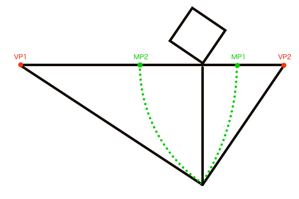
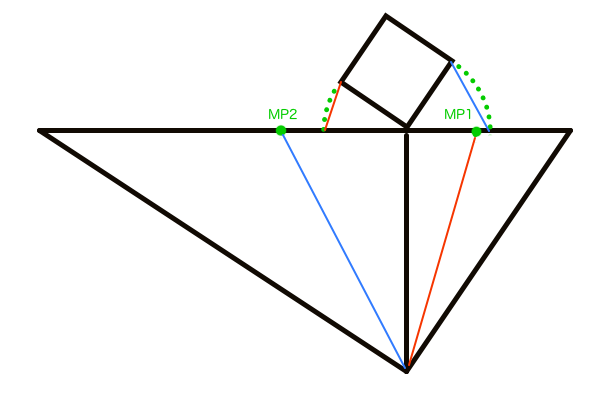
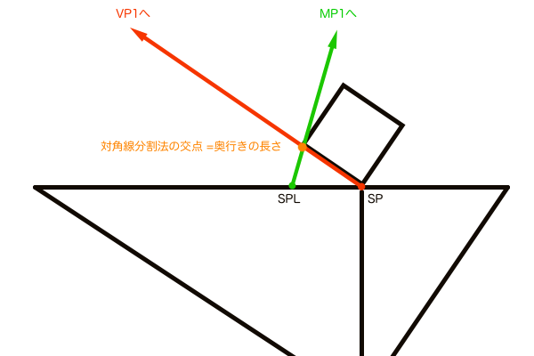

奥行きの長さを作図するD点法・M点法
D点法とは正方形を作図する手法で、1点透視図法の距離点DP（ディスタンスポイント）、または2点透視図法の対角消失点DVP（ダイアゴナルバニッシュポイント）を使います。ただし、D点法で作図できるのは単に正方形というだけで、決められた奥行きの長さで作図することはできません。


そこで奥行きの長さが作図できるM点法です。M点法とは任意の奥行きの長さを作図する手法で、測点MP(メジャーリングポイント）を使います。M点法の作図手順についてはお絵描きパース「M点法」実用化計画 〜縮図を使って奥行きの長さを正確に作図する〜の記事かパース理論の完全形態「透視図法解剖図」の記事を参照してください。

このM点法は非常に便利な手法なので作図手順の解説は良く見かけるものの、いまだにその原理の詳しい解説を見たことがありません。MPが求まる原理、奥行きが測定できる原理くらいは理解しておきたいものです。これらの原理は透視図法の性質と幾何学的な法則によって成り立っています。
MPが求まる原理
まずはM点法のMPの作図手順をおさらいしておきます。円弧と二等辺三角形を使う2通りの方法がありますがどちらも同じ原理のものです。



M点法では各VPに対して必ず一つのMPが存在するのですが、各MPを作図する過程で平行線のペアができます。言葉で説明するのもややこしくなるので図説で済ませますが、立体の平面図の部分と、SPからの直線が平行線のペアになります。そしてその平行線は透視図法の性質上、無限遠にあるアイレベル上で同じ一つの点に収束します。幾何学的には平行線はどこまで伸ばしても決して交わることはありませんが、透視図法の場合は遠近法によって奥行きの縮小が生じるため、互いの平行線の距離は無限遠ではほぼ0として扱われ同じ一つの点に収束させることができます。

この方法でMPが作図できることはわかりましたが、なぜこのMPでパースにのった立体の奥行きが作図できるのか不明のままです。その答えとしては、透視図とは平面図がパースにのったものなので元は同じ図で、平面図上のGP、GPL、VP1、MP1（もしくはGP、GPR、VP2、MP2）は、足線法によって透視図上にも作図できているはずなので各点を繋ぐだけでM点法が成立するということになります。

奥行きが測定できる原理
この件については透視図法の基本原理「対角線分割法」誕生の軌跡 〜3次元を2次元に変換する仕組み〜の記事で結論を出しましたが、改めて文章化しておきます。M点法の奥行きを正確に作図できるのは台形の幾何学的な性質をうまく利用しているからです。その性質のことを以前の記事で独自に「対角線分割法」と名付けました。この対角線とはどれを指すかというと、GP、GPL、VP1、MP1を繋いだときの交差線のことです。そしてこの4点は台形を形作っているので幾何学的なアプローチでの作図が可能になります。
ではその台形の性質とは何かというと「ある平行な2つの線分が形作る台形の対角線の交点の位置は線分の長さが短い方に近くなり、その位置は線分の長さの比率から算出できる」と言い表すことができます（詳しくは上述の記事参照）。そしてこの2つの線分とは立体の側面の原寸GP-GPLと、アイレベル上のVP1-MP1間距離となります。まずは平面図で確認してみましょう。

ただ、平面図のままではアイレベル上の距離というのは無限遠にある地平線の長さと同義なので作図することは不可能です。ですがパースにのった透視図であれば地平線も画面内に作図できるサイズに見えるようになります。透視図法では観測者（カメラ）はSPから地平線を眺める位置にあるため、手前のものが大きく見えるのは必然です。故に平面図では「無限：極小」だった比率が、透視図では「大：小」程度の比率に見えるようになります。しかもパースにのって比率が変わったとはいえ、同じ点を結んで作図したものなので寸法に間違いはありません。たとえ画角が変化しても各点の位置が移動するだけなので、同じように繋げば正確な寸法で作図できます。


これがM点法の奥行きを測定する仕組みです。ところでなぜこの対角線分割法の交点が奥行きの長さと断言できるのか、いまいち掴めない可能性があるのでもう少し掘り下げておきます。MPが求まる原理の説明で、平面図で正方形の両側面とPPとで二等辺三角形を作図しました。この平面図の正方形の側面の奥側の頂点、これが対角線分割法の交点に対応しています。よって透視図上の対角線分割法の交点は立体の奥行きであると断言できるのです。
